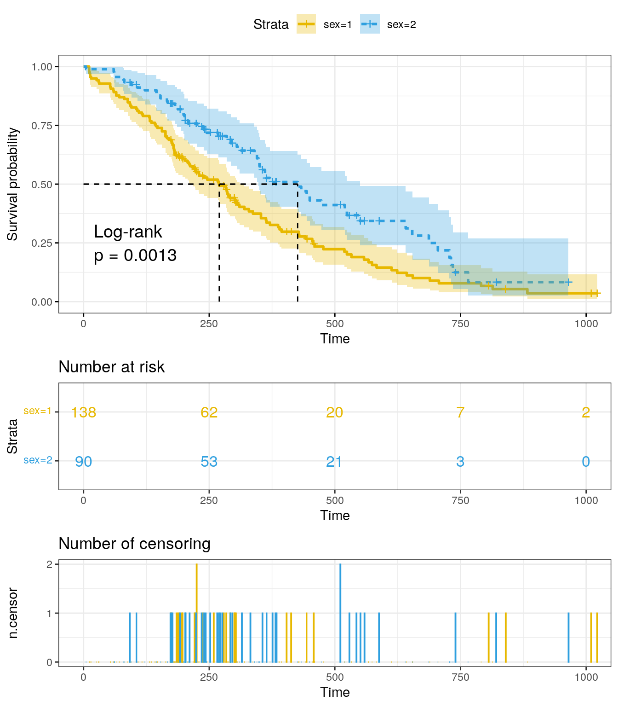
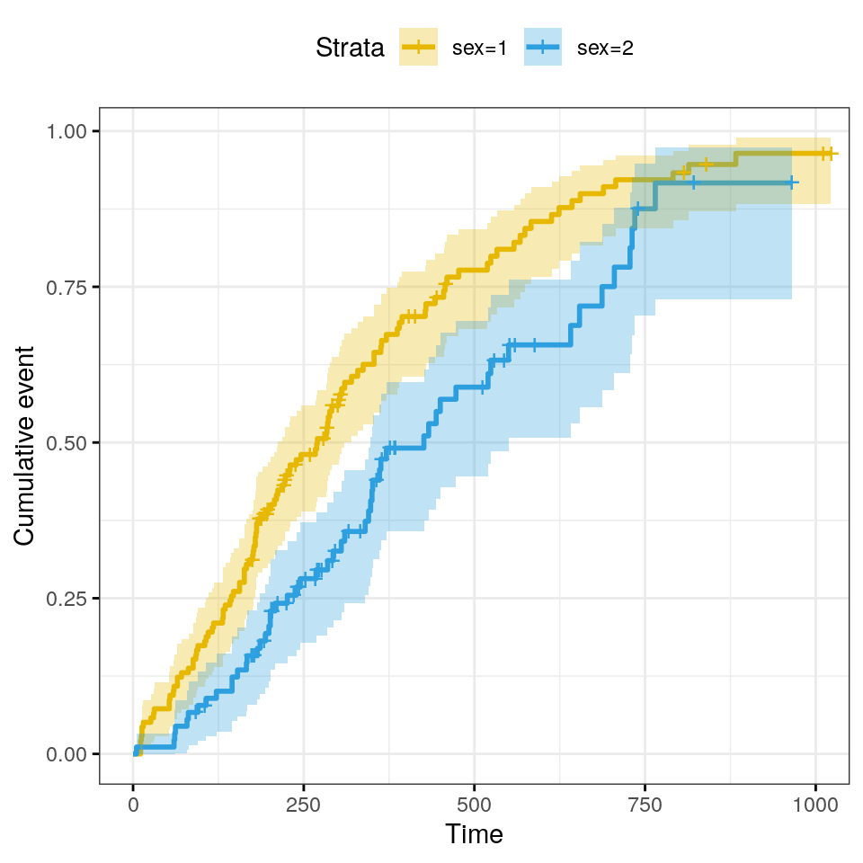
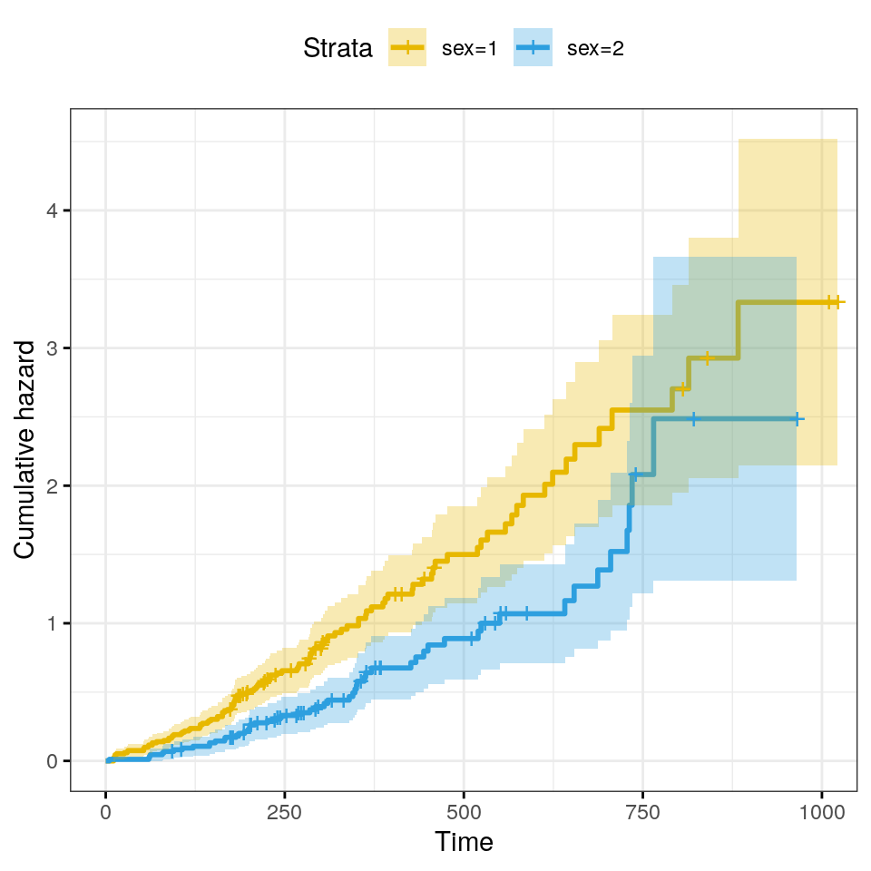

Last updated: 2023-11-09
Checks: 7 0
Knit directory: muse/
This reproducible R Markdown analysis was created with workflowr (version 1.7.1). The Checks tab describes the reproducibility checks that were applied when the results were created. The Past versions tab lists the development history.
Great! Since the R Markdown file has been committed to the Git repository, you know the exact version of the code that produced these results.
Great job! The global environment was empty. Objects defined in the global environment can affect the analysis in your R Markdown file in unknown ways. For reproduciblity it’s best to always run the code in an empty environment.
The command set.seed(20200712) was run prior to running
the code in the R Markdown file. Setting a seed ensures that any results
that rely on randomness, e.g. subsampling or permutations, are
reproducible.
Great job! Recording the operating system, R version, and package versions is critical for reproducibility.
Nice! There were no cached chunks for this analysis, so you can be confident that you successfully produced the results during this run.
Great job! Using relative paths to the files within your workflowr project makes it easier to run your code on other machines.
Great! You are using Git for version control. Tracking code development and connecting the code version to the results is critical for reproducibility.
The results in this page were generated with repository version 16f2e4c. See the Past versions tab to see a history of the changes made to the R Markdown and HTML files.
Note that you need to be careful to ensure that all relevant files for
the analysis have been committed to Git prior to generating the results
(you can use wflow_publish or
wflow_git_commit). workflowr only checks the R Markdown
file, but you know if there are other scripts or data files that it
depends on. Below is the status of the Git repository when the results
were generated:
Ignored files:
Ignored: .Rhistory
Ignored: .Rproj.user/
Ignored: r_packages_4.3.2/
Untracked files:
Untracked: analysis/cell_ranger.Rmd
Untracked: analysis/sleuth.Rmd
Untracked: analysis/tss_xgboost.Rmd
Untracked: code/multiz100way/
Untracked: data/HG00702_SH089_CHSTrio.chr1.vcf.gz
Untracked: data/HG00702_SH089_CHSTrio.chr1.vcf.gz.tbi
Untracked: data/ncrna_NONCODE[v3.0].fasta.tar.gz
Untracked: data/ncrna_noncode_v3.fa
Untracked: data/netmhciipan.out.gz
Untracked: export/davetang039sblog.WordPress.2023-06-30.xml
Untracked: export/output/
Untracked: women.json
Unstaged changes:
Modified: analysis/graph.Rmd
Note that any generated files, e.g. HTML, png, CSS, etc., are not included in this status report because it is ok for generated content to have uncommitted changes.
These are the previous versions of the repository in which changes were
made to the R Markdown (analysis/survival.Rmd) and HTML
(docs/survival.html) files. If you’ve configured a remote
Git repository (see ?wflow_git_remote), click on the
hyperlinks in the table below to view the files as they were in that
past version.
| File | Version | Author | Date | Message |
|---|---|---|---|---|
| Rmd | 16f2e4c | Dave Tang | 2023-11-09 | Survival analysis |
Survival analysis corresponds to a set of statistical approaches used to investigate the time it takes for an event of interest to occur. It is used in:
In cancer studies, typical research questions include:
Most survival analyses in cancer studies use the following methods:
There are different types of events in cancer studies, including:
The time from “response to treatment” (complete remission) to the occurrence of the event of interest is commonly called survival time (or time to event).
The two most important measures in cancer studies include:
Survival analysis focuses on the expected duration of time until occurrence of an event of interest (relapse or death). However, the event may not be observed for some individuals within the study time period, producing the so-called censored observations.
Censoring may arise in the following ways:
Two related probabilities are used to describe survival data:
The survival probability, also known as the survivor function \(S(t)\), is the probability that an individual survives from the time origin (e.g. diagnosis of cancer) to a specified future time \(t\).
The hazard, denoted by \(h(t)\), is the probability that an individual who is under observation at a time \(t\) has an event at that time.
The survivor function focuses on not having an event and the hazard function focuses on the event occurring.
The Kaplan-Meier (KM) method is a non-parametric method used to estimate the survival probability from observed survival times (Kaplan and Meier, 1958).
The survival probability at time \(t_i\), \(S(t_i)\) is calculated as follows:
\[ S(t_i) = S(t_{i-1})(1 - \frac{d_i}{n_i}) \]
Where:
The estimated probability \(S(t)\) is a step function that changes value only at the time of each event. It is also possible to compute confidence intervals for the survival probability.
The KM survival curve, a plot of the KM survival probability against time, provides a useful summary of the data that can be used to estimate measures such as median survival time.
The commonly used packages for survival analysis are
Install the packages, if they are not already installed, and load them
my_packages <- c('survival', 'survminer')
sapply(my_packages, function(p){
if(!require(p, character.only = TRUE)){
install.packages(p)
library(p, character.only = TRUE)
}
as.character(packageVersion(p))
}) survival survminer
"3.5.7" "0.4.9" The survival package comes with lung cancer data.
data(cancer, package="survival")
str(lung)'data.frame': 228 obs. of 10 variables:
$ inst : num 3 3 3 5 1 12 7 11 1 7 ...
$ time : num 306 455 1010 210 883 ...
$ status : num 2 2 1 2 2 1 2 2 2 2 ...
$ age : num 74 68 56 57 60 74 68 71 53 61 ...
$ sex : num 1 1 1 1 1 1 2 2 1 1 ...
$ ph.ecog : num 1 0 0 1 0 1 2 2 1 2 ...
$ ph.karno : num 90 90 90 90 100 50 70 60 70 70 ...
$ pat.karno: num 100 90 90 60 90 80 60 80 80 70 ...
$ meal.cal : num 1175 1225 NA 1150 NA ...
$ wt.loss : num NA 15 15 11 0 0 10 1 16 34 ...The format of the lung data is as follows:
| Column | Details |
|---|---|
| inst | Institution code |
| time | Survival time in days |
| status | censoring status 1=censored, 2=dead |
| age | Age in years |
| sex | Male=1 Female=2 |
| ph.ecog | ECOG performance score |
| ph.karno | Karnofsky performance score (bad=0-good=100) rated by physician |
| pat.karno | Karnofsky performance score as rated by patient |
| meal.cal | Calories consumed at meals |
| wt.loss | Weight loss in last six months (pounds) |
ECOG performance score is as rated by the physician.
The function survfit() can be used to compute
Kaplan-Meier survival estimates. Its main arguments include:
Surv()Compute the survival probability by gender.
fit <- survfit(Surv(time, status) ~ sex, data = lung)
fitCall: survfit(formula = Surv(time, status) ~ sex, data = lung)
n events median 0.95LCL 0.95UCL
sex=1 138 112 270 212 310
sex=2 90 53 426 348 550Use summary(fit) to get a complete summary of the
survival curves.
names(fit) [1] "n" "time" "n.risk" "n.event" "n.censor" "surv"
[7] "std.err" "cumhaz" "std.chaz" "strata" "type" "logse"
[13] "conf.int" "conf.type" "lower" "upper" "call" The surv_summary() function can also be used to get a
summary of survival curves.
fit_sum <- surv_summary(fit)Warning in .get_data(x, data = data): The `data` argument is not provided. Data
will be extracted from model fit.head(fit_sum) time n.risk n.event n.censor surv std.err upper lower strata
1 11 138 3 0 0.9782609 0.01268978 1.0000000 0.9542301 sex=1
2 12 135 1 0 0.9710145 0.01470747 0.9994124 0.9434235 sex=1
3 13 134 2 0 0.9565217 0.01814885 0.9911586 0.9230952 sex=1
4 15 132 1 0 0.9492754 0.01967768 0.9866017 0.9133612 sex=1
5 26 131 1 0 0.9420290 0.02111708 0.9818365 0.9038355 sex=1
6 30 130 1 0 0.9347826 0.02248469 0.9768989 0.8944820 sex=1
sex
1 1
2 1
3 1
4 1
5 1
6 1| Name | Details |
|---|---|
| time | the time points at which the curve has a step |
| n.risk | the number of subjects at risk at time t |
| n.event | the number of events that occurred at time t |
| n.censor | the number of censored subjects, who exit the risk set, without an event, at time t |
| surv | estimate of survival probability |
| std.err | standard error of survival |
| lower,upper | lower and upper confidence limits for the curve, respectively |
| strata | indicates stratification of curve estimation |
If strata is not NULL, there are multiple curves in the result. The levels of strata (a factor) are the labels for the curves.
The ggsurvplot() function can be used to produce the
survival curves for the two groups of subjects.
It is possible to show:
conf.int = TRUErisk.table. Allowed values for
risk.table include:
TRUE or FALSE specifying whether to show
or not the risk table. Default is FALSEabsolute or percentage to show the
absolute number and the percentage of subjects at risk by time,
respectively. Use abs_pct to show both absolute number and
percentage.pval = TRUEsurv.median.line. Allowed values include:
none, hv, h, and
vWe will plot the survival plot with the following options:
theme_bw() ggplot2 themeggsurvplot(
fit,
pval = TRUE,
pval.method = TRUE,
conf.int = TRUE,
risk.table = TRUE,
risk.table.col = "strata",
linetype = "strata",
surv.median.line = "hv",
ggtheme = theme_bw(),
ncensor.plot = TRUE,
palette = c("#E7B800", "#2E9FDF")
)
The x-axis represents time in days, and the y-axis shows the
probability of surviving or the proportion of people surviving. The
lines represent survival curves of the two groups. A vertical drop in
the curves indicates an event, which in this case is the
status (1 = censored and 2 = dead). The vertical tick mark
on the curves means that a patient was censored at this time.
At time zero, the survival probability is 1.0. At time 250, the probability of survival is approximately 0.55 (or 55%) for sex=1 and 0.75 (or 75%) for sex=2. The median survival is approximately 270 days for sex=1 and 426 days for sex=2, suggesting a good survival for sex=2 compared to sex=1.
summary(fit)$table records n.max n.start events rmean se(rmean) median 0.95LCL 0.95UCL
sex=1 138 138 138 112 326.0841 22.91156 270 212 310
sex=2 90 90 90 53 460.6473 34.68985 426 348 550There appears to be a survival advantage for female with lung cancer compare to male. However, to evaluate whether this difference is statistically significant requires a formal statistical test.
Three often used transformations for ggsurvplot can be
specified using the argument fun:
log: log transformation of the survivor functionevent: plots cumulative events \(f(y) = 1-y\). It is also known as the
cumulative incidencecumhaz plots the cumulative hazard function \(f(y) = -log(y)\)Plot cumulative events.
ggsurvplot(
fit,
conf.int = TRUE,
risk.table.col = "strata",
ggtheme = theme_bw(),
palette = c("#E7B800", "#2E9FDF"),
fun = "event"
)
The cumulative hazard is commonly used to estimate the hazard probability. It is defined as \(H(t) = −log(S(t))\). The cumulative hazard \(H(t)\) can be interpreted as the cumulative force of mortality. In other words, it corresponds to the number of events that would be expected for each individual by time \(t\) if the event were a repeatable process.
ggsurvplot(
fit,
conf.int = TRUE,
risk.table.col = "strata",
ggtheme = theme_bw(),
palette = c("#E7B800", "#2E9FDF"),
fun = "cumhaz"
)
The log-rank test is the most widely used method of comparing two or more survival curves. The null hypothesis is that there is no difference in survival between the two groups. The log rank test is a non-parametric test, which makes no assumptions about the survival distributions.
Essentially, the log rank test compares the observed number of events in each group to what would be expected if the null hypothesis were true (i.e., if the survival curves were identical). The log rank statistic is approximately distributed as a chi-square test statistic.
The survdiff() function can be used to compute log-rank
test comparing two or more survival curves.
sex_survdiff <- survdiff(Surv(time, status) ~ sex, data = lung)
sex_survdiffCall:
survdiff(formula = Surv(time, status) ~ sex, data = lung)
N Observed Expected (O-E)^2/E (O-E)^2/V
sex=1 138 112 91.6 4.55 10.3
sex=2 90 53 73.4 5.68 10.3
Chisq= 10.3 on 1 degrees of freedom, p= 0.001 The log rank test for difference in survival gives a p-value of 0.0013112, indicating that the sex groups differ significantly in survival.
Survival analysis is a set of statistical approaches for data analysis where the outcome variable of interest is time until an event occurs.
Survival data are generally described and modeled in terms of two related functions:
Take home message: The survivor function focuses on not having an event and the hazard function focuses on the event occurring.
sessionInfo()R version 4.3.2 (2023-10-31)
Platform: x86_64-pc-linux-gnu (64-bit)
Running under: Ubuntu 22.04.3 LTS
Matrix products: default
BLAS: /usr/lib/x86_64-linux-gnu/openblas-pthread/libblas.so.3
LAPACK: /usr/lib/x86_64-linux-gnu/openblas-pthread/libopenblasp-r0.3.20.so; LAPACK version 3.10.0
locale:
[1] LC_CTYPE=en_US.UTF-8 LC_NUMERIC=C
[3] LC_TIME=en_US.UTF-8 LC_COLLATE=en_US.UTF-8
[5] LC_MONETARY=en_US.UTF-8 LC_MESSAGES=en_US.UTF-8
[7] LC_PAPER=en_US.UTF-8 LC_NAME=C
[9] LC_ADDRESS=C LC_TELEPHONE=C
[11] LC_MEASUREMENT=en_US.UTF-8 LC_IDENTIFICATION=C
time zone: Etc/UTC
tzcode source: system (glibc)
attached base packages:
[1] stats graphics grDevices utils datasets methods base
other attached packages:
[1] survminer_0.4.9 ggpubr_0.6.0 ggplot2_3.4.4 survival_3.5-7
[5] workflowr_1.7.1
loaded via a namespace (and not attached):
[1] gtable_0.3.4 xfun_0.41 bslib_0.5.1 processx_3.8.2
[5] rstatix_0.7.2 lattice_0.21-9 callr_3.7.3 vctrs_0.6.4
[9] tools_4.3.2 ps_1.7.5 generics_0.1.3 tibble_3.2.1
[13] fansi_1.0.5 highr_0.10 pkgconfig_2.0.3 Matrix_1.6-1.1
[17] data.table_1.14.8 lifecycle_1.0.3 farver_2.1.1 compiler_4.3.2
[21] stringr_1.5.0 git2r_0.32.0 munsell_0.5.0 getPass_0.2-2
[25] carData_3.0-5 httpuv_1.6.12 htmltools_0.5.7 sass_0.4.7
[29] yaml_2.3.7 later_1.3.1 pillar_1.9.0 car_3.1-2
[33] jquerylib_0.1.4 whisker_0.4.1 tidyr_1.3.0 cachem_1.0.8
[37] abind_1.4-5 km.ci_0.5-6 commonmark_1.9.0 tidyselect_1.2.0
[41] digest_0.6.33 stringi_1.7.12 dplyr_1.1.3 purrr_1.0.2
[45] labeling_0.4.3 splines_4.3.2 rprojroot_2.0.4 fastmap_1.1.1
[49] grid_4.3.2 colorspace_2.1-0 cli_3.6.1 magrittr_2.0.3
[53] utf8_1.2.4 broom_1.0.5 withr_2.5.2 scales_1.2.1
[57] promises_1.2.1 backports_1.4.1 rmarkdown_2.25 httr_1.4.7
[61] ggtext_0.1.2 gridExtra_2.3 ggsignif_0.6.4 zoo_1.8-12
[65] evaluate_0.23 knitr_1.45 KMsurv_0.1-5 markdown_1.11
[69] survMisc_0.5.6 rlang_1.1.2 gridtext_0.1.5 Rcpp_1.0.11
[73] xtable_1.8-4 glue_1.6.2 xml2_1.3.5 rstudioapi_0.15.0
[77] jsonlite_1.8.7 R6_2.5.1 fs_1.6.3